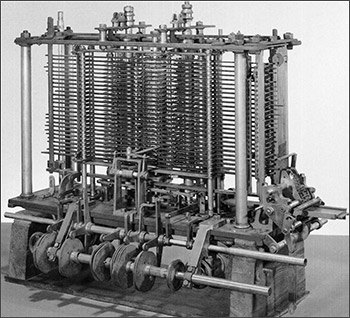
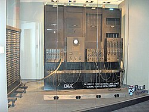
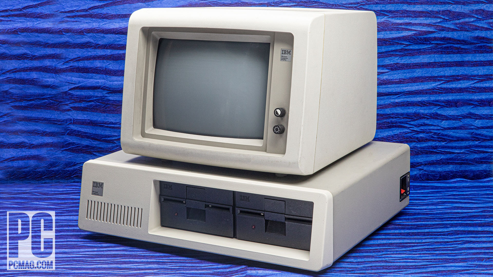

The Abacus: The Original Calculator
The abacus, developed around 2400 BC, is one of the earliest known tools for computing. It was used in ancient civilizations like Babylon and China for arithmetic calculations.
Charles Babbage and the Analytical Engine
In the 1830s, Charles Babbage conceptualized the Analytical Engine, a mechanical general-purpose computer. Although it was never completed, it laid the groundwork for modern computing.
The ENIAC: First Electronic General-Purpose Computer
Completed in 1946, the ENIAC (Electronic Numerical Integrator and Computer) was the first electronic general-purpose computer, capable of performing complex calculations much faster than earlier machines.
The IBM 5150: Birth of the Personal Computer
Released in 1981, the IBM 5150 is considered the first personal computer (PC). It set the standard for future PCs and marked the beginning of widespread computer use in homes and businesses.
Modern Computers: Sleek, Powerful, and Everywhere

Today's computers are compact, powerful, and integral to daily life. From smartphones to laptops, modern devices are the result of centuries of innovation and development in computing technology.